Places I've lived in while serving in the Marine Corps
- Okinawa, Japan
- Podgorica, Montenegro
- Chisinau, Moldova
- Havana, Cuba
1. Okinawa, Japan
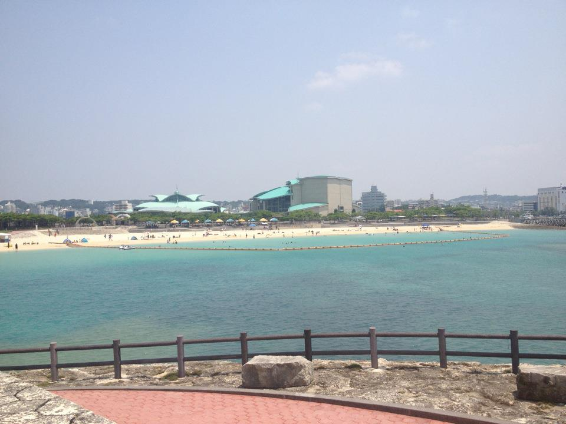
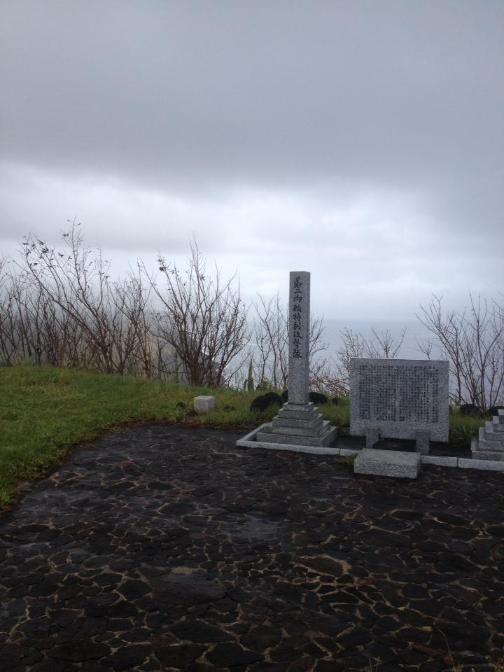
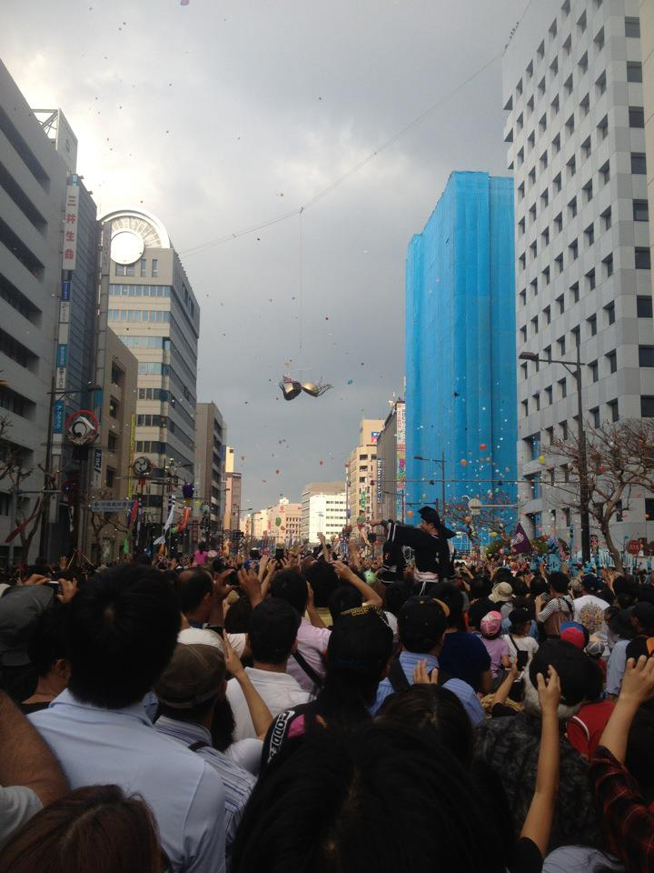
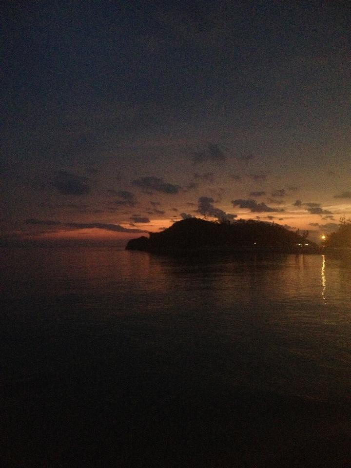
Okinawa is a beautiful island full of amazing sights and people. While I served in the Marine Corps, I enjoyed spending time at the beach, visiting the Iwo-Jima memorial, taking part in the worlds largest rope tug-of-war, and relaxing on the weekends.
2. Podgorica, Montenegro
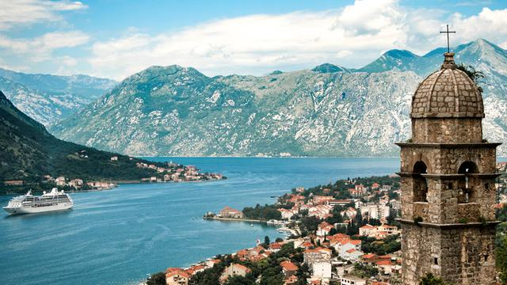
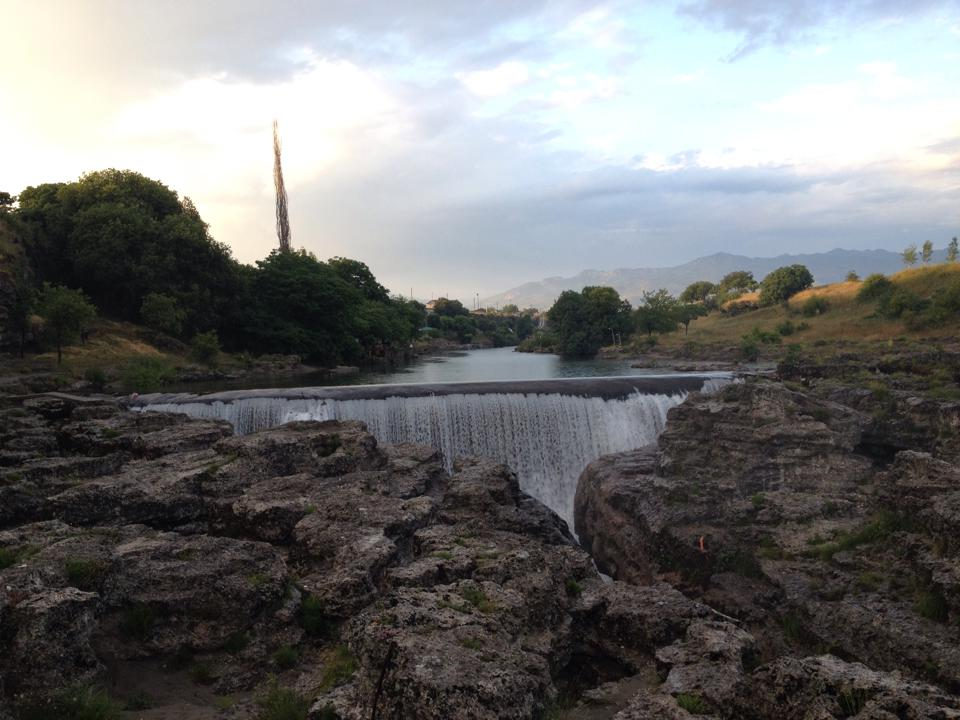
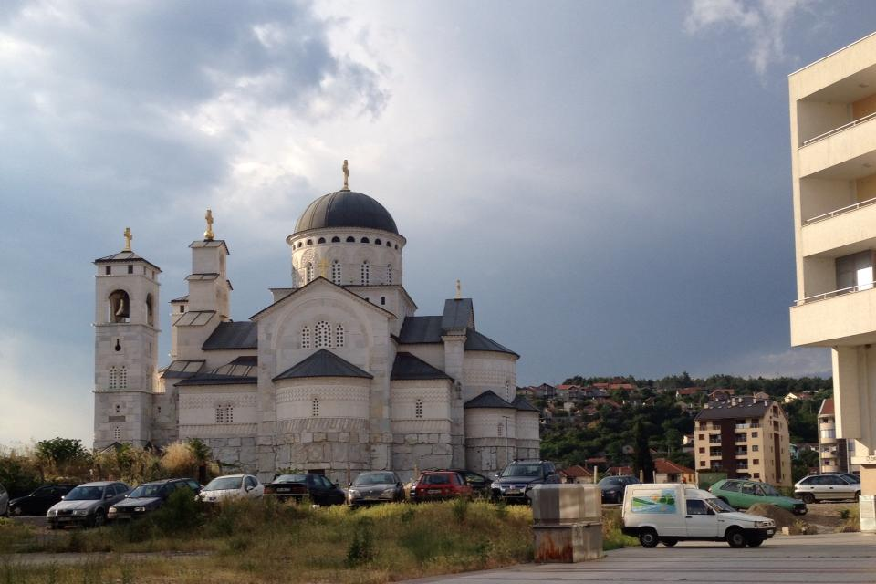
Montenegro is a beautiful country with breath taking coastlines and architecture. The mountains surround the capital and make for some incredible views. While I was in Montenegro I started my traveling journey and explored the cities. It was here where I realized I had a love for cheese and wine.
3. Chisinau, Moldova
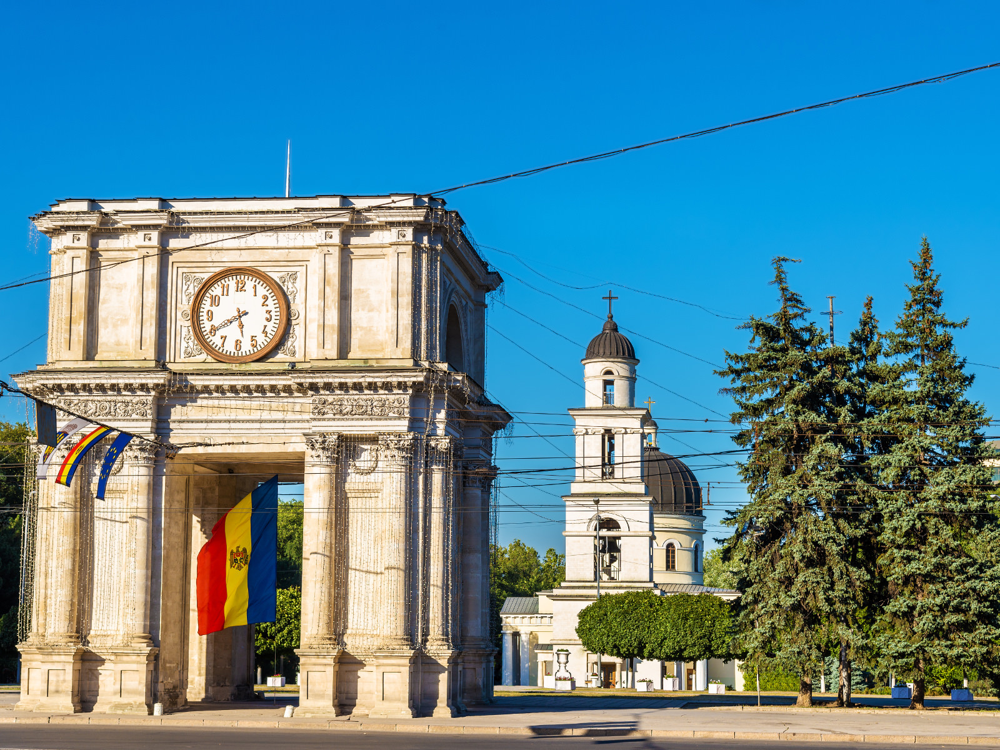
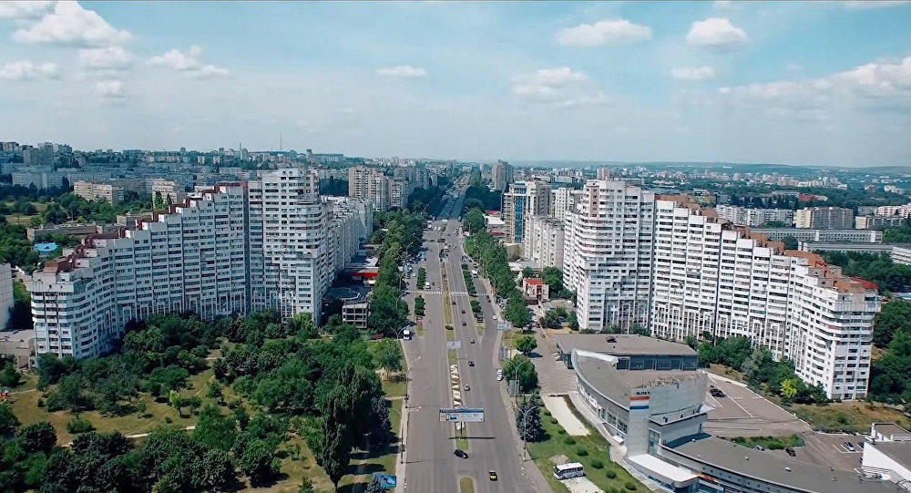
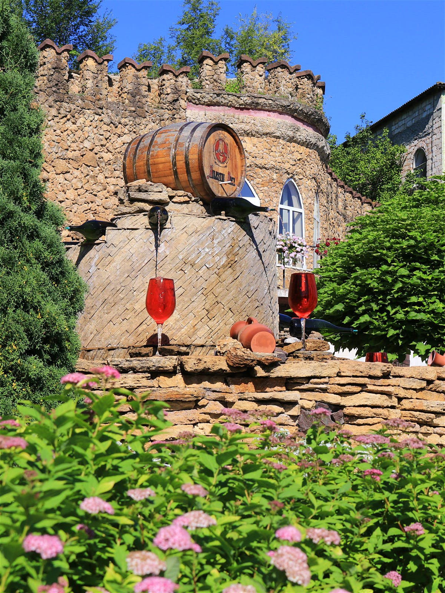
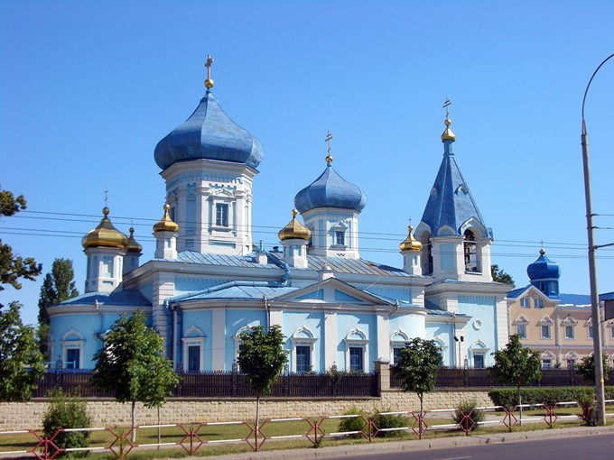
Chisinau, Moldova is a wonderful city full of life during the day and at night. The country is known internationally for their excellent wine. Here I truly developed my appreciation for fine foods and wine. It's here where I met the love of my life, so Chisinau will always have a special place in my heart.
4. Havana, Cuba
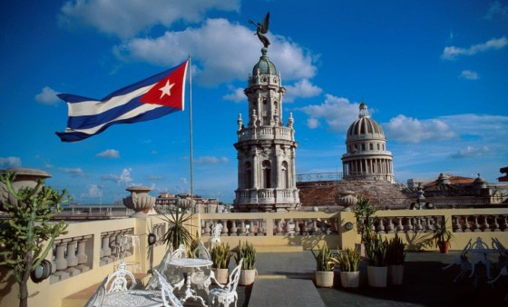
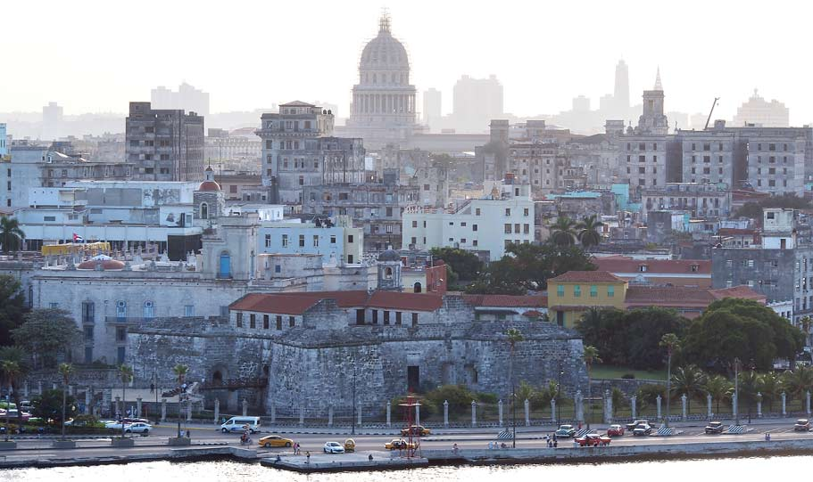
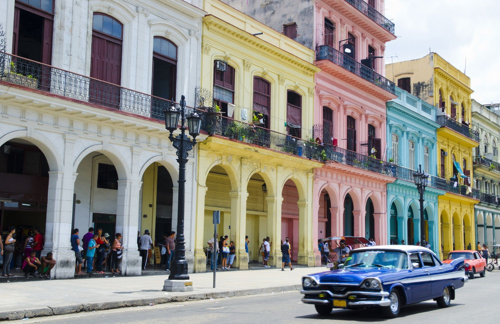
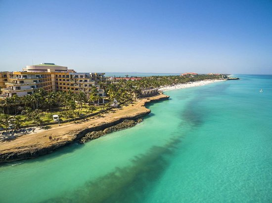
Havana, Cuba is a hidden gem just off the coast of America. Cuba is full of jaw-dropping beaches and spectacular music. The people are friendly and the night life is so much fun. I would recommend that everyone go visit this island if they can. Just try to not have too much fun.